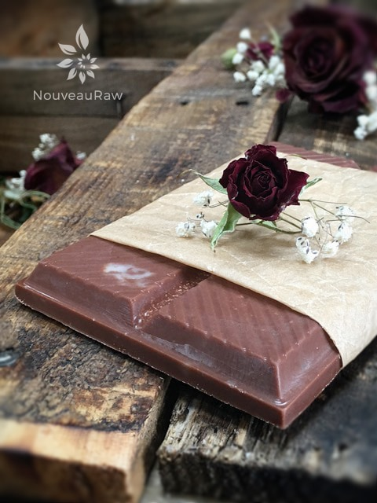

Chocolate Mint Crunch Coconut Bark

~ raw, vegan, gluten-free, nut-free, sugar-free ~
Raw Cacao (raw chocolate) with its high mineral content and wealth of antioxidants is one of nature’s most fantastic superfoods.
Since many of the special properties of cacao are destroyed by cooking, refining, and processing, it is best to locate the raw version. Check your local health food stores and if you struggle to find it locally, you can find tons of suppliers online.
Even though this chocolate bar will soften at room temperature, (it’s not a candy bar that you can throw in your purse and go) it is simply delicious! You must keep this bark in the freezer until you are ready to devour it but it is so worth the trouble.
I added cacao nibs for that crunch bar texture. Next time, I might even add an extra tablespoon of nibs. I can’t say enough great things about this recipe so I will stop and just let you get busy!
Ingredients:
Yields 8 treats (1 Tbsp measurement)
or 1 bar
- 1/2 cup raw coconut butter
- 2 Tbsp raw cacao powder
- 2 Tbsp raw cacao nibs
- 1 tsp mint extract
- 1/2 tsp liquid stevia
- Dash sea salt (helps heighten the sweet flavor)
Preparation:
- Soften the coconut butter by placing the coconut container in a bowl filled with hot water.
- Do not completely melt it, just warm it to a softened stage.
- The reason for keeping the coconut butter at a soft stage rather than melted is when the butter is pure liquid all of the added ingredients sink to the bottom of your mold.
- With the coconut butter at a soft, thick stage everything will remain suspended in the oil.
- Add the cacao powder, nibs, mint, salt, and stevia. Using a spatula, mix everything together until well combined.
- Pour the bark mixture into the selected mold.
- Freeze for at least 10 minutes. Once frozen, pop them out and store them in an airtight, freezer-proof container.
- These bars can handle being out of the fridge or freezer but will start to melt in higher temps. Best to store chilled.

© AmieSue.com